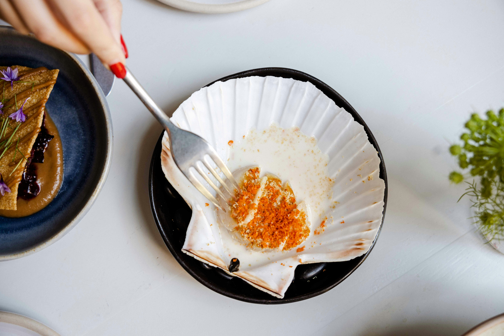

Bacon-Wrapped Scallops

Description
These bacon-wrapped scallops are an easy appetizer to make with just three ingredients, and they taste extremely delicious!
Ingredients
- 6 slices bacon
- 12 sea scallops, rinsed and drained
- 3 tablespoons fresh lemon juice
Steps
- Preheat the oven to 350 degrees F (175 degrees C).
- Cut bacon slices in half and wrap each half around a scallop. Use a toothpick to secure in place. Drizzle lemon juice over scallops. Place on a cookie sheet.
- Bake in a preheated oven for 15 to 20 minutes or until bacon is cooked. Serve warm.